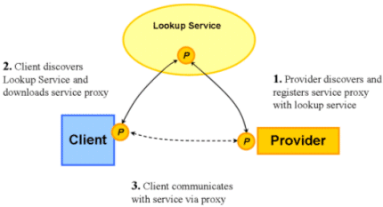
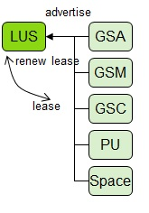
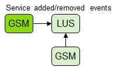
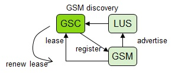
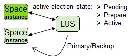
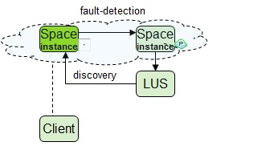
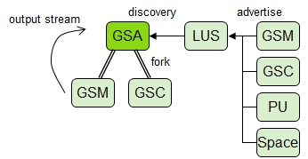

The Lookup Service (LUS) provides a leased based registry holding Service Grid level services advertised on it. Some of the services exposed on the LUS are GigaSpaces Agent, GigaSpaces Manager, GigaSpaces Container, Space Instances (actual instances of a Space that form a topology), and Processing Unit Instances (actual instances of a deployed Processing Unit).
A Lookup Service creates a virtualized isolated environment by utilizing lookup groups (when using multicast) or lookup locators (when using unicast). When starting the LUS and other runtime components GigaSpaces Agent, GigaSpaces Manager and GigaSpaces Container, the lookup groups / lookup locators can be set in order to form an isolated environment.
In a multicast enabled environment, the lookup groups can be set using either the LOOKUPGROUPS environment variable (when using scripts), or by setting -Dcom.gs.jini_lus.groups system property.
In a unicast environment (where multicast is disabled), the lookup locators can be set using either LOOKUPLOCATORS environment variable (when using scripts), or by setting -Dcom.gs.jini_lus.locators system property. In a unicast environment, the LUS are started on specific machines (usually two LUS instances), and the lookup locators simply point to the two hosts the LUS instances are running on.
When a Container is started with a specific lookup groups / lookup locators, any Processing Unit instance running within it (and Space instances as well) will inherit the configuration and join the virtualized LUS environment.
The following diagram shows how a service provider registers a service with the Lookup Service, and how a client subsequently locates the service at the Lookup Service and begins working with the service.

The service proxy is copied by the provider to the Lookup Service at registration. If the client decides to use the service, he downloads the service proxy and invokes the service by calling the methods of its proxy interface.
|
Every Service Grid component is registered with the Lookup Service (GSC, GSM, Space, Processing Unit instance). Once registered the lookup Service grants a lease that is renewed by each service every few seconds. |
 |
|
GSMs advertise and discover each other via Lookup Service. When GSM starts, it recovers from all peer GSMs. GSMs are active-active, managing deployments or monitoring other deployments. If managing GSM of a specific processing unit has terminated, one of the monitoring GSMs becomes the new "manager' for this specific processing unit. |
 |
|
All GSCs advertise themselves on the Lookup Service. Once these are registered they are discovered by the existing running GSMs. A lease is granted upon registration, and renewals are maintained between the GSC and the GSM. A GSC that has failed to renew it's lease will attempt to re-register with the GSM. A GSM that detects that a GSC has failed to renew, will remove the GSC from its list of available resources. Processing Unit instances are not affected by this. |
 |
|
Space instances register themselves with the lookup service. Space instances go through an active-election process, discovering current instances and electing a primary Active-election is 3-phase procedure: pending, prepare, active |
 |
|
A backup Space instance maintains a fault-detection mechanism to its primary counterpart. If failure of a primary occurs, backup goes through an election process to become primary. Clients discover Space instances via lookup service. Client Cluster Proxy monitors the liveness of each cluster member |
 |
|
GSA spawns and manages service processes: LUS, GSM, GSC. The GSA monitors the spawned processes for any failures and restarts the process if necessary. For convenience, the output stream of the spawned processes is redirected to the GSA console. Discovery of currently running services is done via Lookup Service. It may happen with a globally managed instance that due to discovery delays, an instance is started and then terminated. |
 |